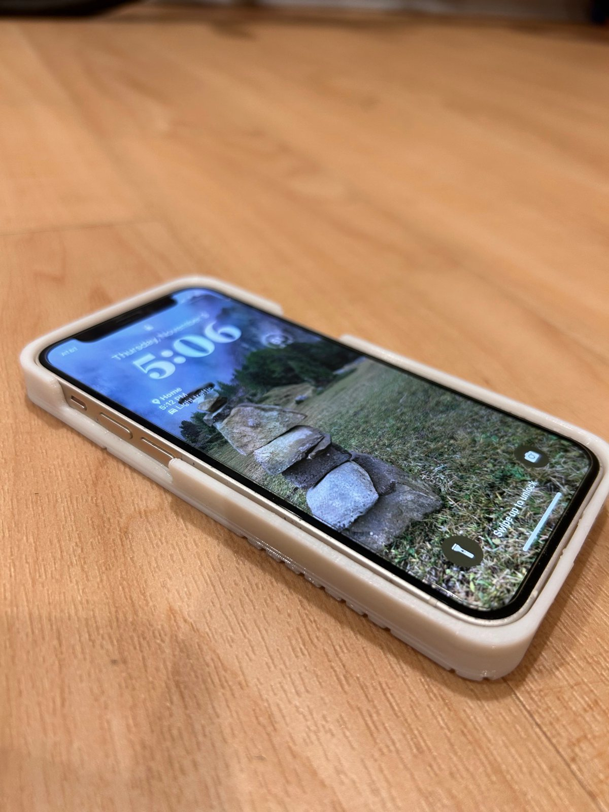
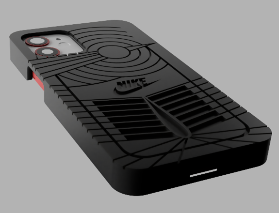
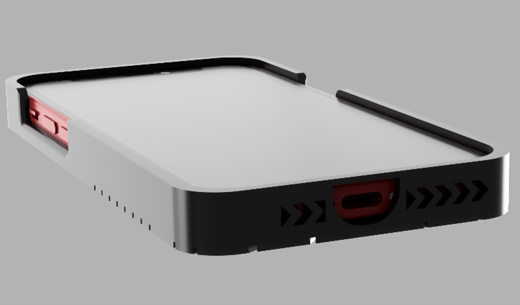
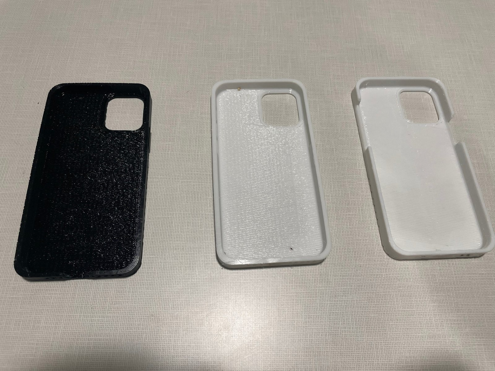
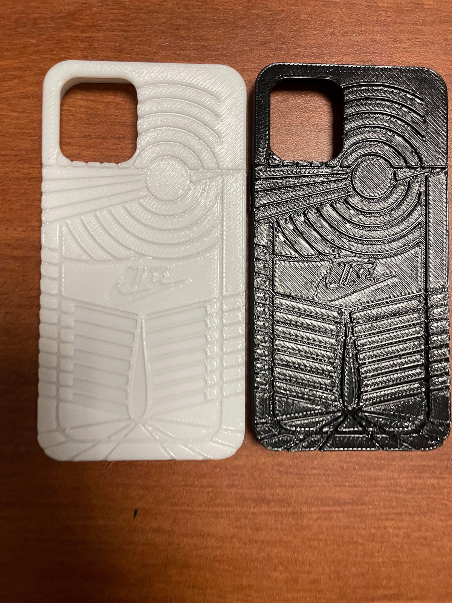

TPU Phone Case
A fun project to test my CAD abilities and learn more about 3D printing with TPU.


Design
Influenced by the outsole of my favorite shoe and the best selling shoe of all time, the Jordan 1 High. This pattern is almost a perfect replica of the outsole.


Parametric Modeling and CAD
To simplify and streamline the prototyping phase of the design I used parametric modeling in Autodesk Fusion 360. This approach involved creating several “parameters” for the key dimensions of the case model. To ensure a tight fit on the iPhone I used the phone manufacturer spec sheet as well as meticulous measuring of the phone's features.


Iterations
I went through multiple prototypes to get the design how I wanted. The most difficult part was the fit on the phone because 3D printing can be unprecise. The other challenge was making the walls thin enough so the buttons were accessible, but not too thin so it wouldn't hold its shape.